fig-1.1
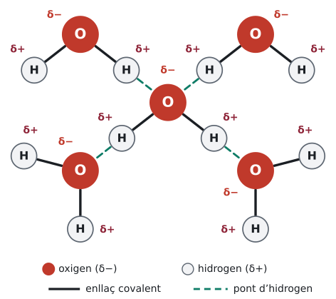
L’aigua és polar. Els ponts d’hidrogen (línia discontínua) uneixen el δ+ d’un hidrogen amb el δ− d’un oxigen veí.
Cada figura al costat del peu amb què surt al capítol, i la línia de comprovació.

L’aigua és polar. Els ponts d’hidrogen (línia discontínua) uneixen el δ+ d’un hidrogen amb el δ− d’un oxigen veí.
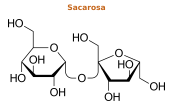
Sacarosa (Vaccinationist, domini públic). L’enllaç uneix el C1 α de la glucosa amb el C2 β de la fructosa. No queda cap anomèric lliure: no és reductora.
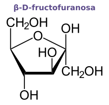
β-D-fructofuranosa (NEUROtiker, domini públic), la forma de la fructosa dins la sacarosa. Anell de cinc, amb el CH₂OH de l’anomèric i el de la cadena lateral.
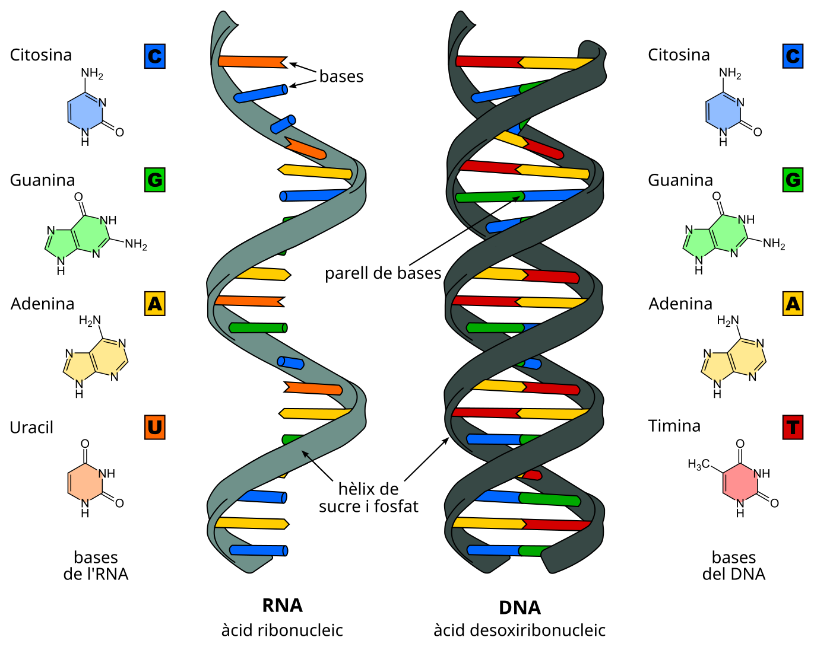
DNA i RNA. Al DNA les bases són A, T, G i C i el sucre és desoxiribosa. A l’RNA, la timina se substitueix per uracil i el sucre és ribosa. Les bases s’aparellen i les cadenes formen una hèlix.
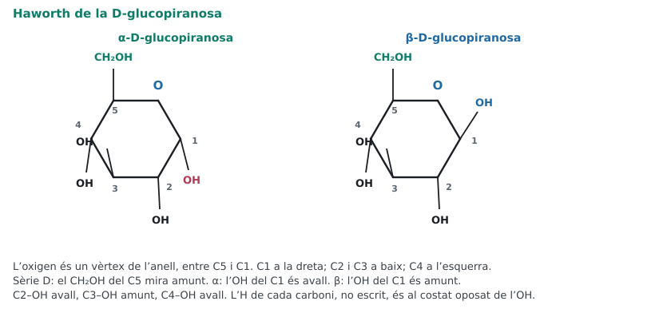
α-D-glucopiranosa i β-D-glucopiranosa (NEUROtiker, domini públic). L’única diferència és l’OH del C1: avall és α i amunt és β. El traç gruixut és l’aresta de davant (C2–C3). L’hidrogen de cada carboni, no escrit, queda al costat oposat del substituent.
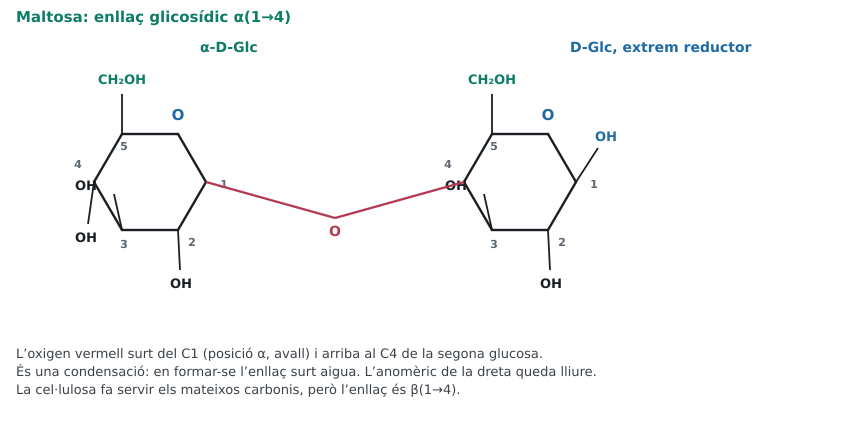
Maltosa en projecció de Haworth (NEUROtiker, domini públic). L’enllaç α(1→4) surt cap avall del C1 de l’esquerra i arriba al C4 de la dreta. L’anomèric de la dreta queda lliure: la maltosa és reductora. El mateix enllaç fa l’amilosa i el tram lineal del glicogen.
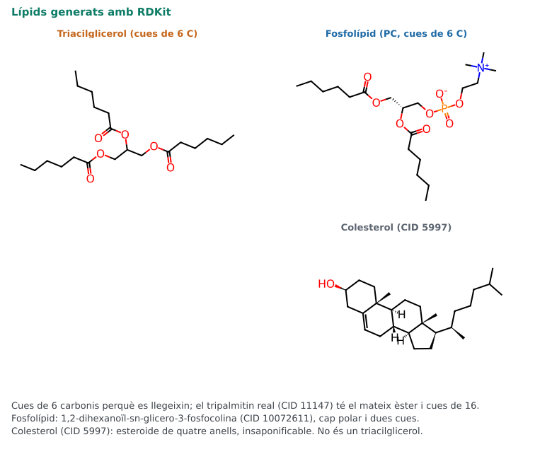
Triacilglicerol (tres cues, reserva, apolar) i fosfolípid (dues cues i un cap polar, amfipàtic).
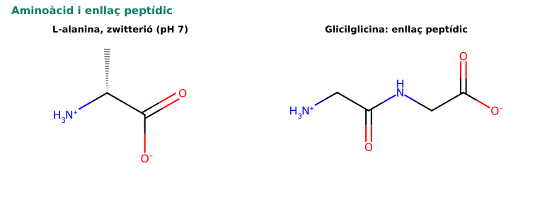
Zwitterió d’un aminoàcid i enllaç peptídic. La cadena s’escriu de l’extrem amino a l’extrem carboxil.
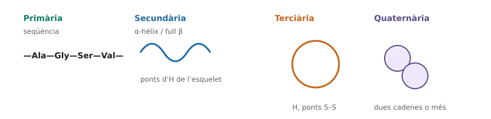
Quatre nivells d’estructura. La primària és la seqüència. La secundària, hèlix α i full β, es manté amb ponts d’hidrogen de l’esquelet. La terciària és el plegament de la cadena i la quaternària, l’associació de diverses cadenes. Desnaturalitzar desfà el plegament; la seqüència es conserva.
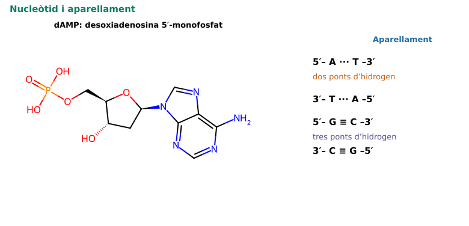
Nucleòtid i doble hèlix antiparal·lela. A–T fa dos ponts d’hidrogen; G–C, tres.
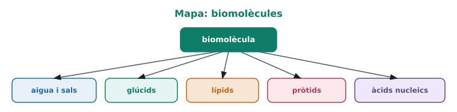
Les quatre funcions que les orientacions demanen de relacionar amb els grups: energia, estructura, regulació i informació.
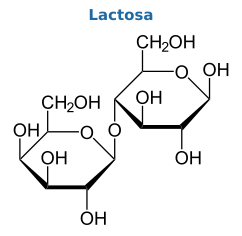
Lactosa (NEUROtiker, domini públic): β-D-galactopiranosa unida per l’anomèric al C4 d’una glucosa. L’OH del C4 de la galactosa és amunt. L’anomèric de la glucosa queda lliure.
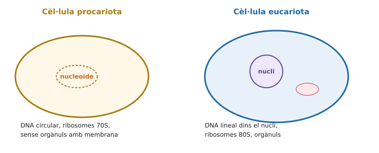
Procariota: nucleoide, sense orgànuls membranosos. Eucariota: nucli delimitat i compartiments.
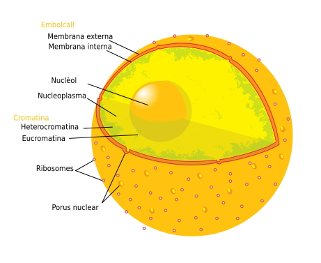
Nucli. Doble embolcall amb porus, nuclèol i cromatina. Els ribosomes es munten al nuclèol i surten al citosol.
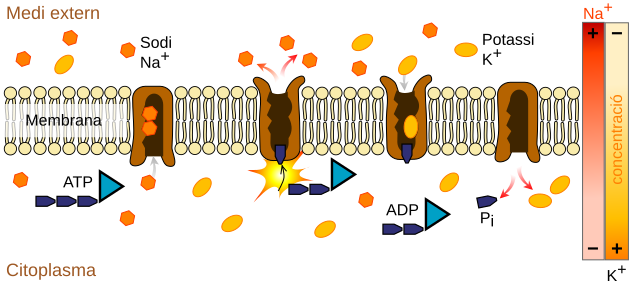
Bomba de sodi i potassi. Treu Na⁺ cap al medi extern i entra K⁺ al citoplasma, amb despesa d’ATP. El transport va en contra de gradient.
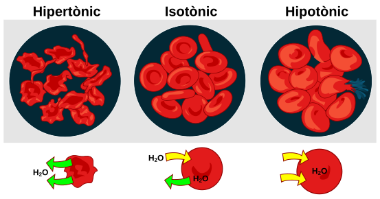
Osmosi en una cèl·lula animal. En medi hipertònic l’aigua surt i la cèl·lula es crenela. En medi hipotònic l’aigua entra i es pot lisar. En medi isotònic no hi ha flux net.
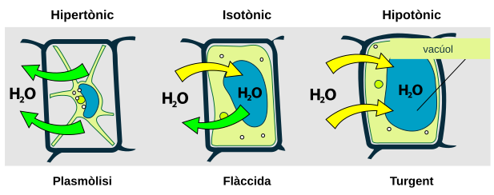
Osmosi en una cèl·lula vegetal. En medi hipertònic hi ha plasmòlisi: la membrana se separa de la paret. En medi hipotònic la cèl·lula queda turgent i la paret n’atura el trencament.
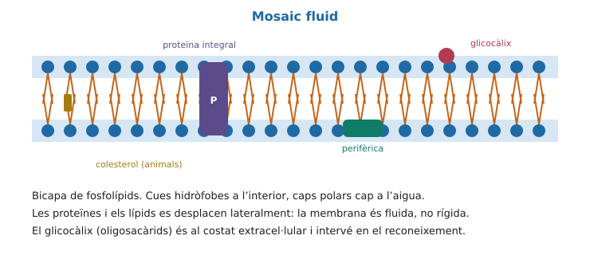
Mosaic fluid. Dalt, el medi extracel·lular; baix, el citoplasma. Bicapa de fosfolípids, proteïnes integrals, perifèriques i en hèlix α, glicoproteïnes, glicolípids, colesterol i filaments del citoesquelet.
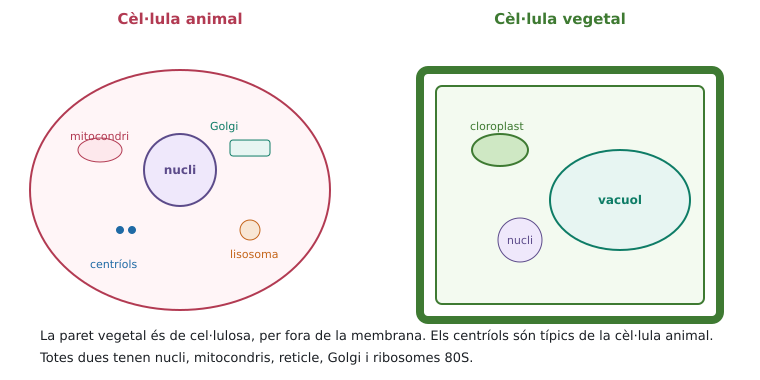
Cèl·lula animal (LadyofHats, adaptació al català de Gerard Duenas, domini públic). Sense paret; hi ha centríols, lisosomes i els orgànuls membranosos comuns.
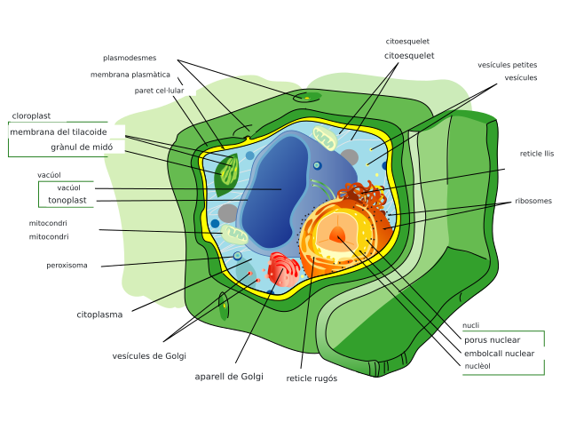
Cèl·lula vegetal. Paret de cel·lulosa per fora, membrana plasmàtica, vacúol gran amb tonoplast, cloroplasts, mitocondris i nucli. No hi ha centríols.
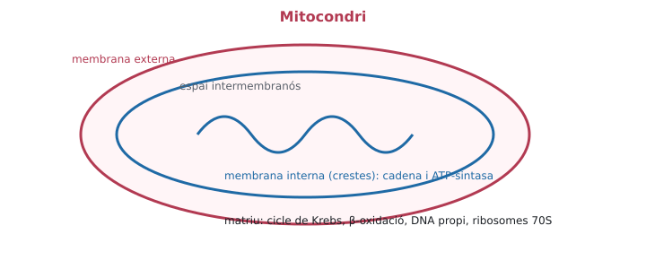
Mitocondri. Membrana externa, espai intermembranós, membrana interna amb crestes i matriu, amb DNA i ribosomes propis. Krebs i β-oxidació a la matriu; cadena respiratòria i ATP-sintasa a la membrana interna.
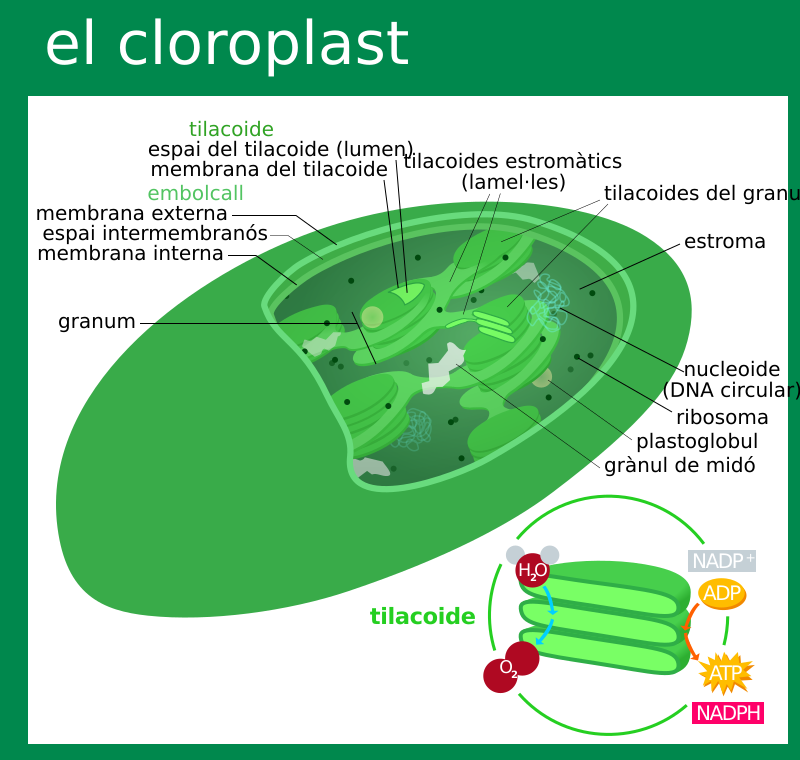
Cloroplast (Kelvinsong, CC BY 3.0). La fase lluminosa és a la membrana del tilacoide i el cicle de Calvin, a l’estroma. L’O₂ surt de l’aigua.
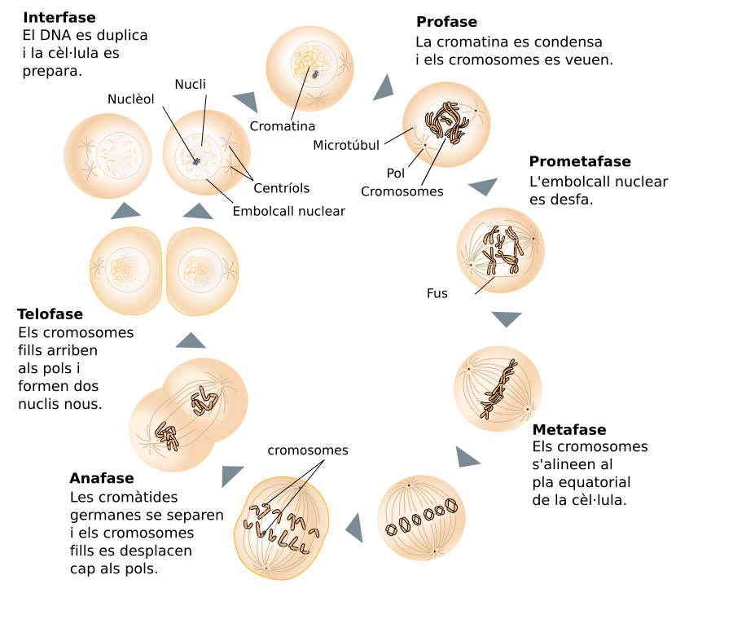
Mitosi. A la profase es condensen els cromosomes, a la metafase s’alineen i a l’anafase se separen les cromàtides germanes. En surten dues cèl·lules diploides.
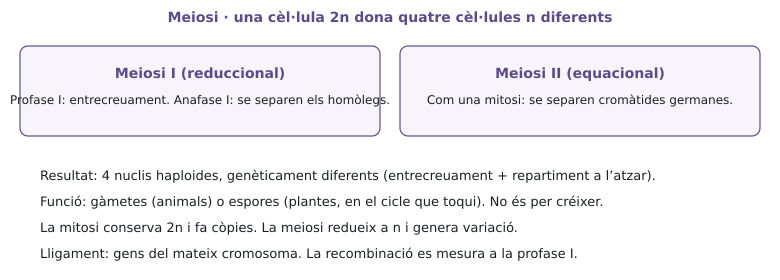
Meiosi I. A la profase I els homòlegs s’aparellen i hi ha entrecreuament. A l’anafase I se separen els cromosomes homòlegs, encara amb dues cromàtides.
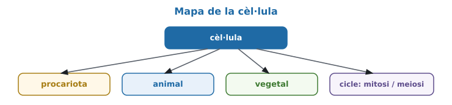
De la cèl·lula a les dues divisions. La localització de les vies metabòliques és al tema 3.
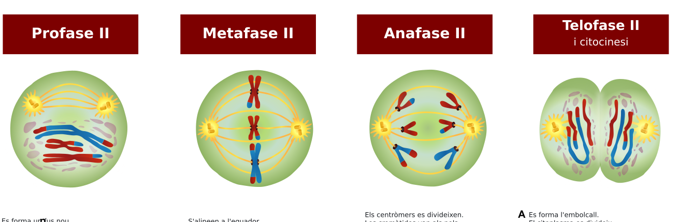
Meiosi II. Se separen les cromàtides germanes. En surten quatre nuclis haploides.
Catabolisme i anabolisme queden lligats per l’ATP i pels coenzims. Una via no és una reacció.
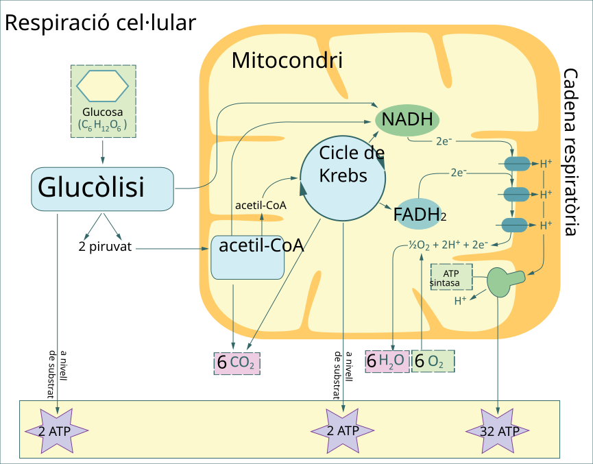
Respiració cel·lular (Zlir'a, CC BY-SA 4.0). La glucòlisi, al citosol, rendeix 2 ATP. El piruvat entra a la matriu i passa a acetil-CoA. El cicle de Krebs, també a la matriu, rendeix 2 ATP per glucosa. La cadena respiratòria i l’ATP-sintasa són a la membrana interna i en rendeixen uns 28. Amb els 4 de la fosforilació a nivell de substrat, el total és d’uns 30–32 ATP per glucosa.
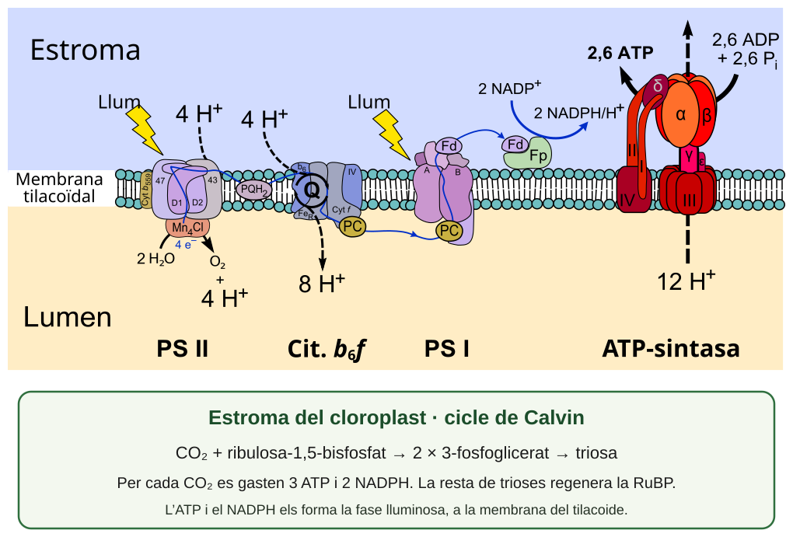
Fase lluminosa a la membrana del tilacoide i cicle de Calvin a l’estroma (Yikrazuul, adaptació d’AngelHerraez, CC BY-SA 3.0). El fotosistema II trenca l’aigua i allibera O₂. Els protons s’acumulen al lumen i tornen a l’estroma per l’ATP-sintasa. El fotosistema I redueix el NADP⁺. A l’estroma, el Calvin fixa el CO₂ amb aquest ATP i aquest NADPH.
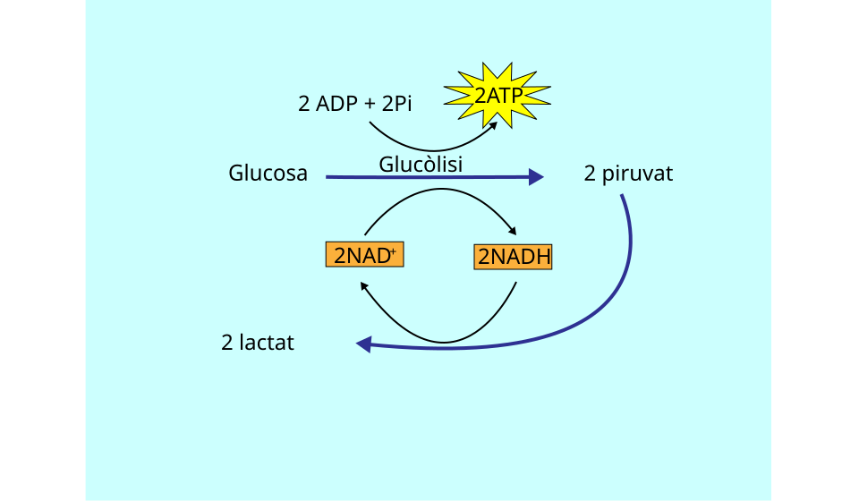
Fermentació làctica. La glucòlisi dóna 2 piruvat, 2 ATP i 2 NADH. El piruvat es redueix a lactat i regenera el NAD⁺. No es desprèn CO₂.
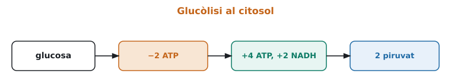
Glucòlisi: es paguen 2 ATP i se’n cobren 4. Net: 2 ATP i 2 NADH, al citosol.
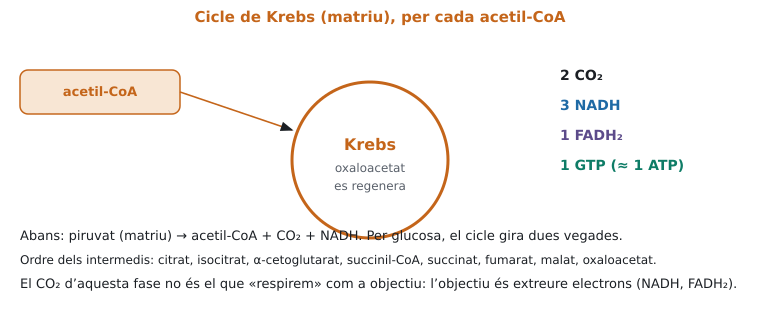
Una volta del cicle per cada acetil-CoA. El carboni que entra no és, volta per volta, el que surt com a CO₂: el balanç sí que és de dos CO₂.
Els electrons acaben a l’oxigen. El gradient de protons mou l’ATP-sintasa. El FADH₂ no passa pel complex I.
Les dues fermentacions regeneren NAD⁺. El guany és el de la glucòlisi: 2 ATP.
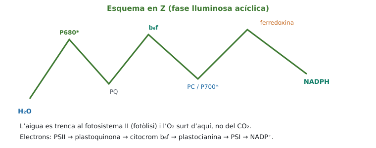
Esquema en Z. L’aigua es trenca al fotosistema II. El NADPH es forma al final del fotosistema I.
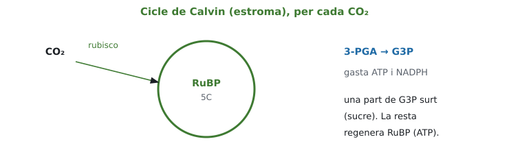
Calvin a l’estroma. La rubisco fixa el CO₂. El balanç per CO₂ és 3 ATP i 2 NADPH.
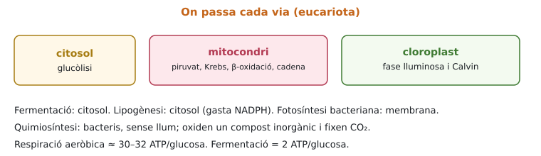
Localització en una cèl·lula eucariota. Els procariotes fan les mateixes químiques a la membrana i al citoplasma, sense orgànuls.
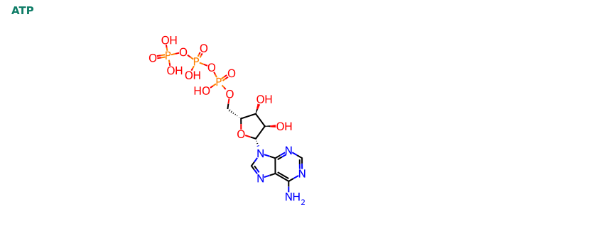
ATP: adenina, ribosa i tres fosfats. L’enllaç que la cèl·lula fa servir és el dels fosfats, no l’esquelet del nucleòtid.
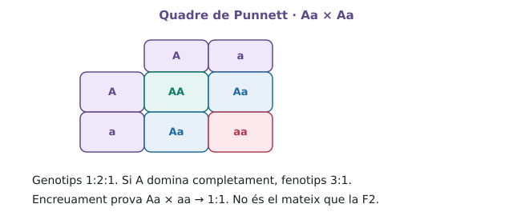
Punnett d’Aa × Aa. Genotips 1:2:1. Amb dominància completa, fenotips 3:1.
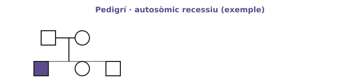
Dos no afectats amb un fill afectat: patró compatible amb un recessiu. Cal mirar més generacions abans de tancar-ho.
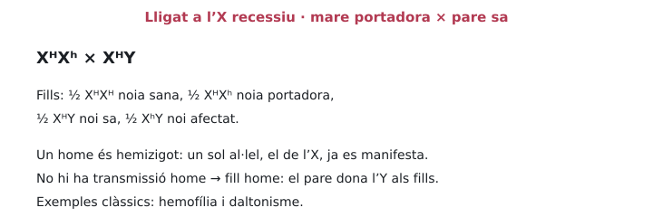
Mare portadora i pare sa: la meitat dels fills homes, en esperança, són afectats. Cap filla no ho és, però la meitat són portadores.
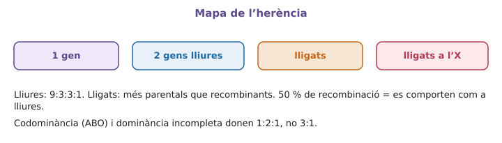
Un gen, dos gens lliures, gens lligats o un gen a l’X: el quadre de Punnett no és el mateix.
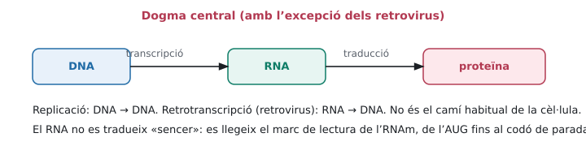
El camí habitual i l’excepció dels retrovirus, que es reprèn al tema 7.
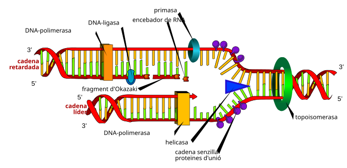
Forquilla de replicació (LadyofHats, domini públic). La polimerasa només allarga en sentit 5′→3′. Una cadena és contínua i l’altra, la retardada, es fa a fragments d’Okazaki. En bacteris, la DNA-polimerasa III allarga i la DNA-polimerasa I treu l’encebador.
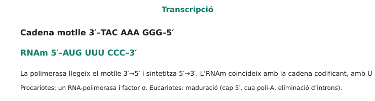
El motlle es llegeix 3′→5′. L’RNA que en surt s’assembla a la cadena codificant, amb U en lloc de T.
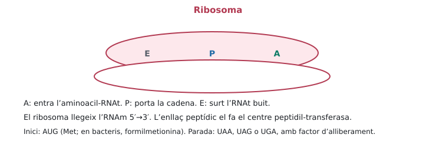
Traducció al ribosoma (LadyofHats, domini públic). El ribosoma té els llocs A i P. L’RNAt buit surt pel lloc E, a l’esquerra del P. L’RNAm es llegeix 5′→3′.
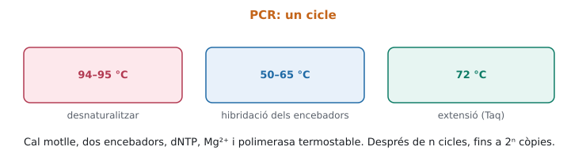
Les tres temperatures d’un cicle de PCR. La polimerasa de l’extensió ha de ser termostable.
L’RNA guia porta el Cas9 a la diana. El tall es repara amb errors o amb un motlle.
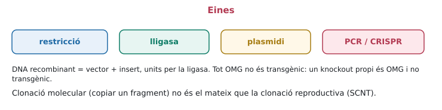
Restricció, ligasa, plasmidi i les dues tècniques que amplien o editen: PCR i CRISPR.
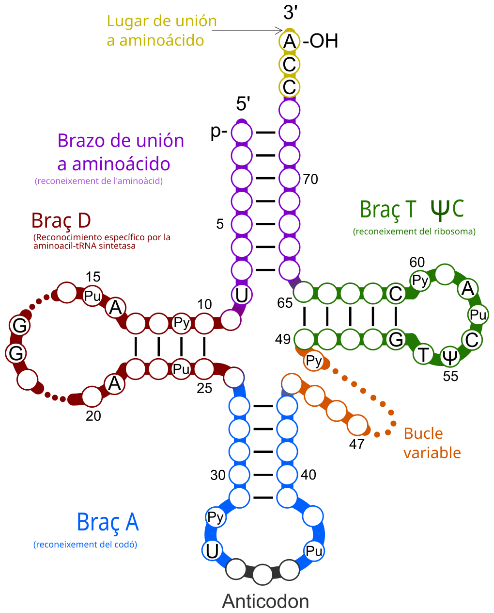
RNAt en forma de trèvol. El braç acceptor uneix l’aminoàcid. El braç de l’anticodó reconeix el codó de l’RNAm. El braç D i el braç T participen en el reconeixement pel ribosoma i per la sintetasa.
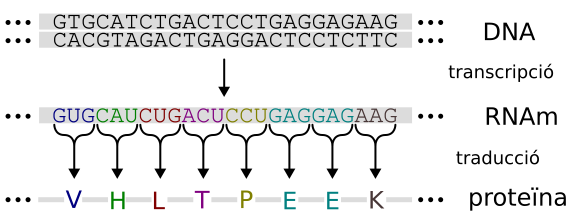
Del DNA a la proteïna. La transcripció copia una cadena en RNAm, amb U en lloc de T. La traducció llegeix l’RNAm de tres en tres bases i enfila els aminoàcids.
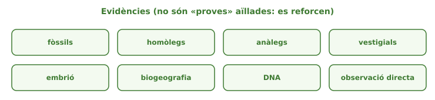
Les evidències no es llegeixen soles: encaixen entre elles. Homòleg no és el mateix que anàleg.
Les tres condicions han de donar-se alhora. Sense herència, la selecció d’una generació no canvia la següent.
Al·lopàtrica: primer la geografia. Simpàtrica: la barrera és reproductiva sense allunyar les poblacions.
El que canvia p i q. L’aparellament no aleatori, tot sol, canvia les freqüències dels genotips, no les dels al·lels.
Bacteri (Ali Zifan, CC BY-SA 4.0). Càpsula, paret, membrana plasmàtica, citoplasma, nucleoide, ribosomes, fímbria i flagel. No hi ha mesosoma: no és una estructura real. El plasmidi, quan n’hi ha, és un DNA petit a part del nucleoide. Els arqueus s’hi assemblen per fora i se’n separen per la paret i els lípids.
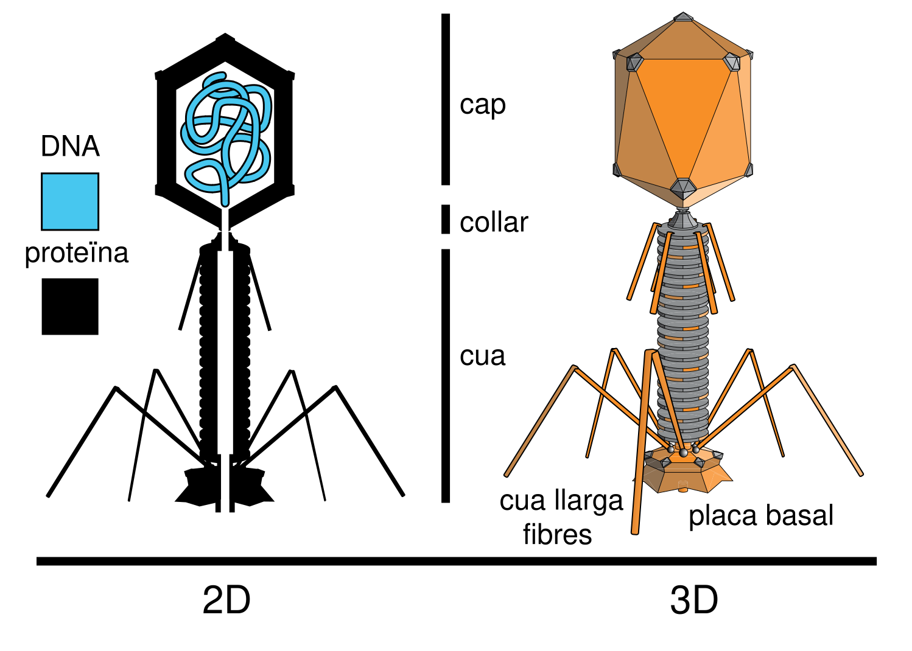
Bacteriòfag de cua llarga (Adenosine, CC BY-SA 2.5). Cap amb DNA, collar, cua, placa basal i fibres. No tots els virus tenen cua: molts només tenen càpsida i, alguns, embolcall.
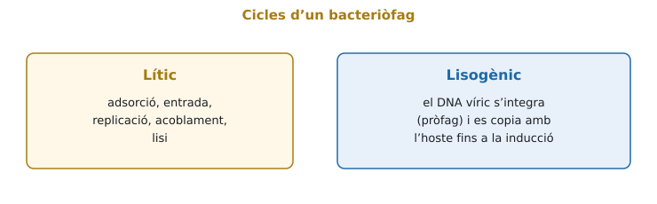
Lític: el virus es multiplica i trenca la cèl·lula. Lisogènic: el genoma s’integra i espera.
Cicle del nitrogen. Els passos bacterians que cal saber dir: fixació, nitrificació, desnitrificació i amonificació.
Tres formes acel·lulars. El virus és l’única que porta àcid nucleic i càpsida.
La secundària puja abans, més amunt i sobretot amb IgG, perquè ja hi ha cèl·lules de memòria.
Anticòs en forma d’Y. Dues cadenes pesants i dues de lleugeres. Els extrems variables encaixen amb l’antigen.
Humoral: B i anticossos. Cel·lular: T col·laboradors i T citotòxics. Els col·laboradors no substitueixen els citotòxics.
De la barrera a la memòria. La vacuna és activa i artificial; el sèrum, passiu i artificial.
Cinc peces. Si en falta el control o les rèpliques, el disseny no aguanta una pregunta de la PAU.